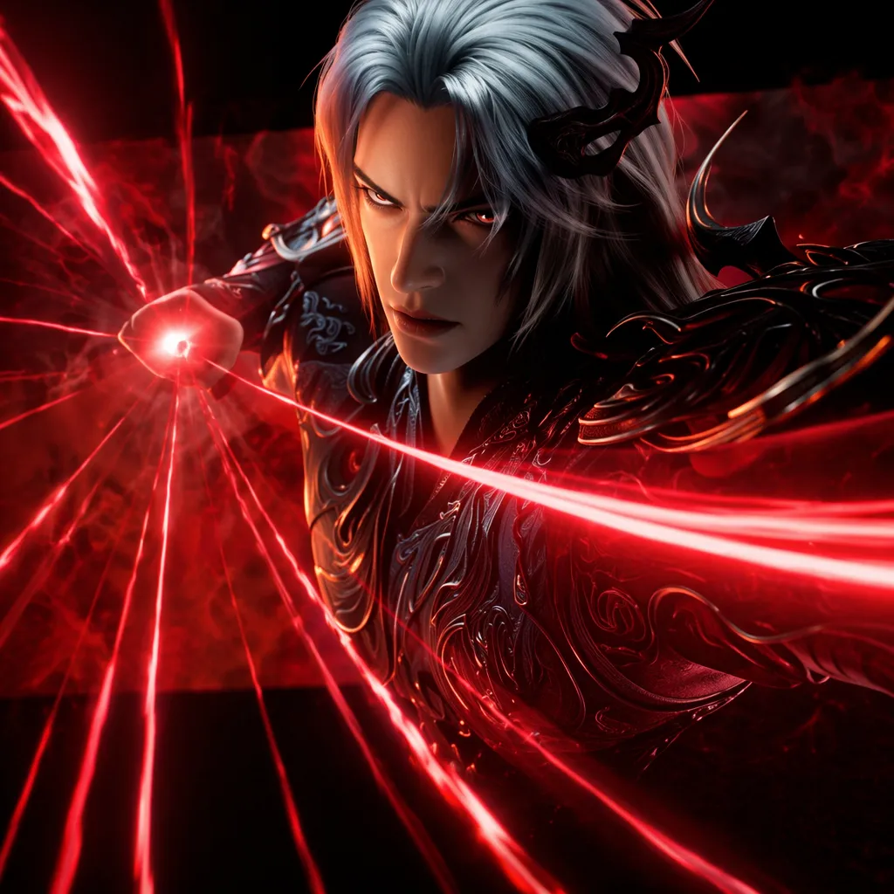
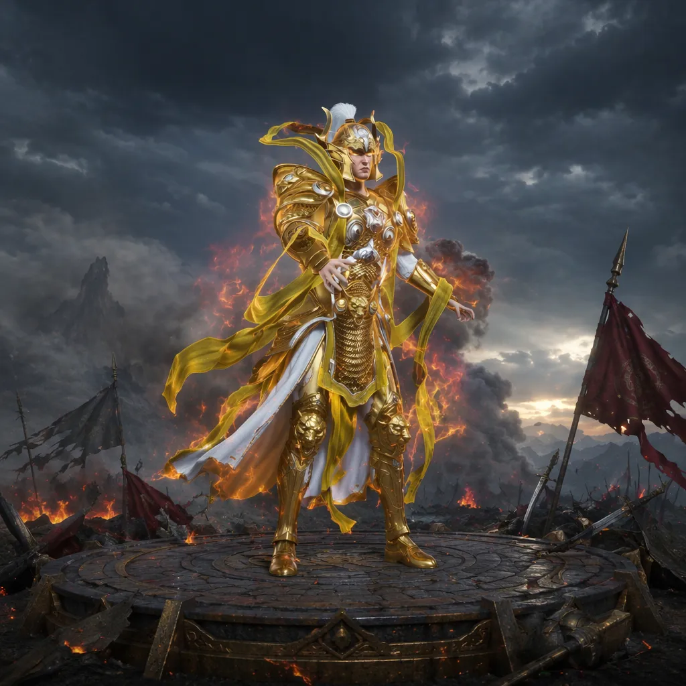

The Protagonist
A Mortal With an
Unknown Origin
You believe yourself an ordinary villager — until the scroll unseals your meridians and the heavens recoil. Your origin reads only one word: Unknown.
Within your veins sleeps a terrifying, supposedly extinct bloodline. It is the reason your family vanished — and the reason shadows now hunt you.
The Mentor
The Trapped
Immortal
Sealed within the divine scroll, arrogant and transactional, this Immortal cares nothing for your grief — only for what your awakening can buy.
When they glimpse the lineage in your blood, everything changes. A secret pact is struck: your power, in exchange for their resurrection.


The Uncle's
Final Gift
He knew the truth long before the monsters came. With his last breath amid the burning alleys, he presses the scroll into your hands.
"Grow strong," he warns. "Seek a great sect. And never trust that the slaughter was chance."
The Clean-Up
Crew
The soldiers did not flee. They were ordered to leave the village to die — then return to execute the survivors.
Shadowy factions move behind the massacre. The crystal's command — — is your only thread back to them.

Character Studies
Faces of the Realm
Select any portrait to view it in full.
.webp)
Attire
Robes of the
Mortal Dust
Before the silks of immortality, there is only coarse cloth and the weight of survival. Your journey begins humble — every thread a reminder of how far there is to climb.
The demo is in development — be the first to know when it opens.
Get Notified